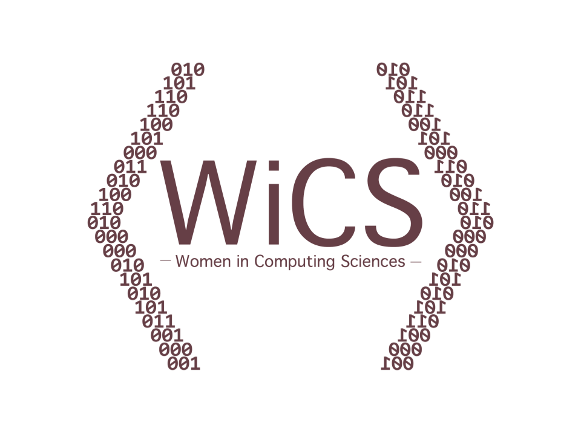

Extracurriculares
Women in Computing Science
As the hackathon co-chair, I coordinate transportation to external hackathons and direct the club's annual hackathon during the spring.

Badminton
I love traveling with my team and competing around the east coast. We train two times per week. Recently, we won 3rd in Division 2A.
ROCA researcher
I'm part of a team of computer science students building an educational platform so teachers can learn from observation feedback with ease.

Photography
During my free time, I enjoy taking photos of interactions between people, nature, and man-made items. I hope to travel the world.